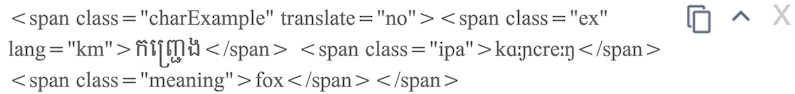
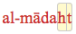
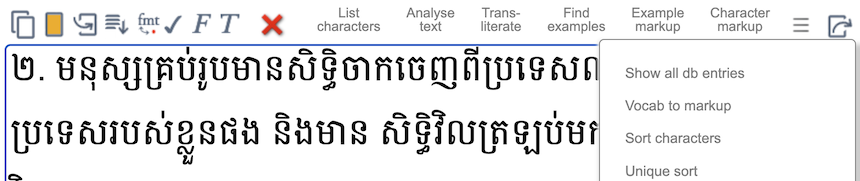
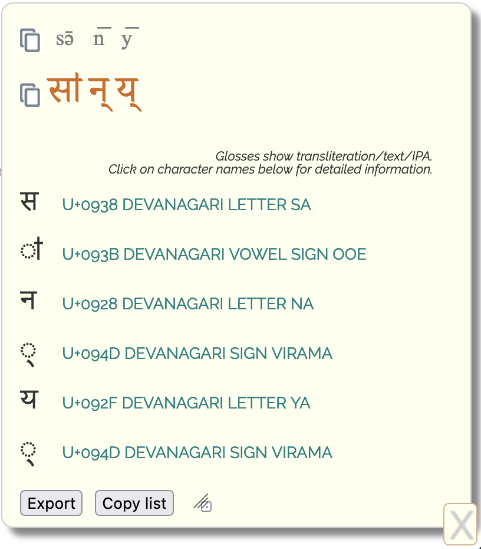
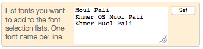
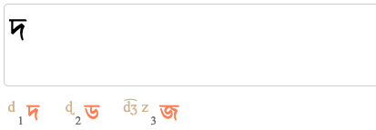
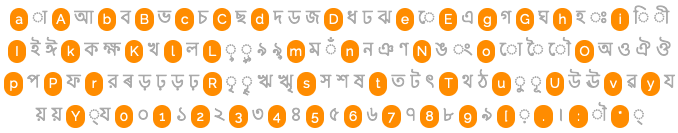
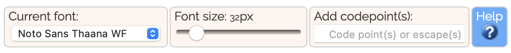
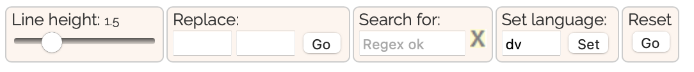
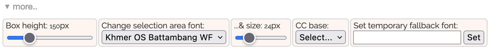

Character apps allow you to produce or analyse runs of text in a particular language and script. They are especially useful for people who don't know a script well, as characters are displayed in ways that aid identification.
To analyse text, copy & paste it into the large text area and select the desired control(s).
To produce text in the text area, do one of the following (some apps may not offer all options):
Type on your keyboard, using type-assist. A quick way to input text from the ASCII characters on your keyboard. Various alternative methods are available, to help you access both the target language and Latin characters used in transcriptions.
Open the shape-based input panel, and click on similar shapes to highlight characters you may be looking for. Good when you don't know the orthography well.
Click on the characters in the selection area. The blocks are arranged to assist with input, and groups of characters are arranged within a block phonetically.
Hints. The K T P selectors to the left of the window allow you to show hints for characters in the selection area. K shows the keypress that will produce that character in type-assist mode. T shows the transliteration for that character. P shows likely IPA pronunciation(s) for the character. These hints are off by default. To turn them off again after using them, click on the currently highlighted option, or on the X option (which appears as you mouse over the menu).
Basic use
The controls just above the text area allow you to interact with or analyse the text in various ways. They nearly all work on any highlighted text within the text area, or if there is no highlight, on all the text. Controls near the bottom of the app allow you to change font, font size, line-height, text direction, etc.
Contrast. Some of the text on the UI has a lighter coloured text, so as to not swamp the key information. However, if you find it difficult to read the light-coloured text, click on at the top right of the page to toggle between lighter and darker text. If you chose to save your settings between sessions, this will also be remembered.
Sample text. To add some sample text to the text area, click on the icon.
Fonts.
To properly display the text you will need to use a font that is loaded on your system or device, or use the web font(s) downloaded with the page (names end in 'WF'). Font selectors in the app indicate which fonts are standard for Mac and Windows operating systems, and fonts that are freely available from Google and SIL. See more information about standard OS fonts in Mac and Windows.
Autofocus & mobile devices.
When working on an iPad or similar device, you should turn off Autofocus (just below the text area). This prevents the keyboard popping up after you input every character. (On older versions of iOS, you may also need to select a character twice to add it to the output field.)
Text direction In character apps for RTL orthographies, the characters → ↔ ←︎ ⇒ ⇐︎︎ (just below the right side of the text area) allow you to set the base direction of the text area to LTR, auto, and RTL, respectively. The symbols ⇐︎ and ⇒ set the direction to RTL or LTR override.
In some character apps you will also see the symbol ⭅︎. This mirrors the character glyph at the same time as applying a RTL override.
Transliteration vs transcription. Character apps distinguish between transliteration and transcription. In transliteration each native character has an equivalent Latin character associated with it. The transliteration may not accurately represent pronunciation, but does allow straightforward and reversible conversion between the two scripts. The transliteration schemes used here are specially created for materials on this site, and the app has controls to convert to and from that transliteration. A transcription, on the other hand, is more likely to be phonetically accurate (though may still reflect only an approximation), and is likely not to allow reversible conversions.
Normalisation. All text is output in Unicode normalisation form NFC by default. You can change to NFD or no normalisation using the controls below the selection area. Note that normalization only takes place when you click on a character in the selection palette – text pasted into the box won't be normalised until you add another character from the UI, or set the normalisation explicitly.
Secondary text area. An area that opens up automatically just below the text area receives the output of various tools. Note that the text is editable.

The icons to the right ( ) allow you to copy the contents of this area to the clipboard, insert the contents into the main text area, or close this subwindow, respectively. When you insert the contents of this subwindow into the main text area, the text will overwrite any highlighted text, otherwise it will just be inserted at the current cursor position.
Some conversions produce ambiguous output. In this case, you will be offered two alternatives on a yellow background, eg.  presents you with the alternatives 'h' or 't'. Simply click on the alternative you want, and the app will discard the rest.
Controls above the text area

Controls above the text area (and those pulled down from the icons to the right) allow you to run various operations on the text in the box. Most of them work on what you have selected within the box, or on all the text in the box if nothing is selected.
Icons
The icons on the left above the input box allow you to do the following:
copy the text to the clipboard
select all the text
generate a URL to share with others that will reproduce for them what you see in the text box
add some sample text to the text area
show/hide invisible characters.
Check the text for non-recommended characters or sequences.
show the font preview list. Mouse over the font names to change the font used for the text area. (Only works for webfonts or fonts you have on your system.) Click on a font name to change the font and store the setting.
set OpenType typographic features. Reveals controls that allow you to turn on and off the font features of the font used for text in the output area. (Of course, the font needs to support the relevant features.)
delete all the text
See a video of the font preview in action
Find more information about using the font preview panel, including Adding your own fonts, Identifying missing characters, and Checking coverage for a specific language.
Controls to the right
List characters. Produces lists of the Unicode code points in the text area, and displays them in the bottom right corner of the window.

At the top of the panel the selected text is shown, segmented into units corresponding to one base character plus any following combining mark(s). Latin transliterations are shown above each character, to help you identify the components of the string. (Remember that this is not a transcription.)
To copy either line to the clipboard, click on the icon that precedes it.
There follows a list of each character found, with its Unicode code point and name. When detailed information is available for a given character, you can follow the link on the character name to see it.
At the bottom of the panel, the Export button allows you to open the text in a number of other apps. The Copy list button copies to the clipboard the list of code points with codepoints and names (very useful for copy/pasting lists to email, issue threads, or other places)
Analyze text. This control is particularly useful for understanding the composition of the text. For each character highlighted (or the whole text box if nothing is highlighted) this lists information such as the following:
phonetic correspondences (IPA)
type of character
special usage-related information
transliteration (per the system designed for this app)
equivalents in one or more standard or common transcriptions
the name of the letter
the character's Unicode name
There are also links to the information in the character notes page, and to a list of properties for that character.
If the app recognises a sequence of characters that has a particular significance in its own right, it will show that sequence (slightly indented) after the initial character.
The two controls Show IPA and Show Transcription reproduce the list of characters with the transcription or IPA information alongside each. This is not an actual transcription: the information is provided on a character by character basis. However, that said, it can often provide a quick way of producing a transcription. You can select or grey out the transcription items by clicking on them. The remainder can be transferred to the main text area as a string by clicking on the Add button.
Transliterate. Converts the contents of the text area to a Latin transliteration that provides a one-to-one correspondence between the selected text and Latin symbols. Transliterations produced this way are particularly useful for getting a quick idea of the composition of text in scripts, especially where the individual parts are not well separated in the orthography. (It is not a transcription.)
The transliteration scheme was developed for this character app, and, where possible, uses symbols that represent sounds typically associated with the main phonological equivalents, rather than the sometimes fairly arbitrary selection of diacritics found in other systems. Of course, the complexities of mapping graphemes to sounds means that this is far from a real phonetic transcription, and it doesn't show vowels or other things that are not shown in the original text, but the process is reversible (unlike most transcriptions).
Find examples. Opens a new window and searches for the highlighted text in the database of terms. The highlighted text can be a single character, or any sequence of characters. If it's a single character, the database will be searched for all terms containing that character. If it's a sequence of characters, the database will be searched for entries containing that sequence.
The database search works with regular expressions, so for example you could write something like x..?y to search for any sequences that begin with an 'x', then have one or two other characters, then end with a 'y'. This supports the regular expression syntax that your browser uses for JavaScript matching. If you want to search for a literal character that is used in regex syntax, such as a period, you'll need to escape it (eg. \.).
By default, the search attempts to match the language terms and their transcriptions, but you can reduce the scope of the search on the term base page.
From the term database page you can look up matches in the Wiktionary lemma list by clicking on entries with links.
Example markup. This may be useful to speed up the creation of examples. You can create an example with four parts, delimited by |, in the following order:
native text
meaning
IPA transcription
transcription
You don't need to add all four elements, but if you want to skip one in the middle of the sequence, keep the vertical lines.
For example, the following in a Ukrainian character app:
To get just the Cyrillic and the IPA you would use:
український||ʊkrɐˈjinʲsʲkei̯
Character markup. This may be useful to speed up the creation of markup for a specific character or set of characters. Select one or more characters in the text area, then click this button.
It will return something like the following for each of the characters:
<bdi class="codepoint" translate="no"><span lang="en">ҧ</bdi> [<span class="uname">U+04A7 CYRILLIC SMALL LETTER PE WITH MIDDLE HOOK</span>]</span>
When you add it to your document, it will look like this.
ҧ [U+04A7 CYRILLIC SMALL LETTER PE WITH MIDDLE HOOK]
If you are dealing with more than one character, they will be displayed by default as normal. If you wish to separate each character with a + sign, prefix the text to be converted with a colon.
The pulldown list
The list that is accessed via this icon contains additional controls. The exact controls available for a given app will vary, depending on the type of orthography and whether or not additional features have been added to the app. The list below describes the more common controls, but doesn't describe additional features.
Show all db entries. This is like 'Analyse text', described above, except that it will list all the meaningful sequences contained in the backend database for each character looked up, whether or not those sequences are contained in the string that is being tested.
Term to markup. Converts a term entry to markup that can be used for an example. Must be applied to one line at a time.
Sort characters. Produces a space-separated list of characters in the selected text, in Unicode code point order. Characters that appear multiple times are all displayed together. If you want to remove the spaces, click on to the right of the text area.
Unique sort. Produces a space-separated list of characters in the selected text, in Unicode code point order, but characters that appear multiple times are reduced to a single item. If you want to remove the spaces, click on to the right of the text area.
Word sort. Produces a space-separated list of the words in the selected text, where a 'word' is defined as a string of characters separated by spaces. This is particularly useful for sorting digraphs and such with ordinary characters.
Show IPA data. Opens a panel below the text area, and for each of the characters selected, shows phonological information associated with that character. This is not an actual transcription: the information is provided on a character by character basis. However, that said, it can often provide a quick way of producing a transcription. You can select or grey out the transcription items by clicking on them. The remainder can be transferred to the main text area as a string by clicking on the Add button.
Show transcription data. Opens a panel below the text area, and for each of the characters selected, shows Latin transcription information associated with that character in the database. This is not an actual transcription: the information is provided on a character by character basis. However, that said, it can often provide a quick way of producing a transcription. You can select or grey out the transcription items by clicking on them. The remainder can be transferred to the main text area as a string by clicking on the Add button.
Uppercase. Converts selected text to uppercase.
Lowercase. Converts selected text to lowercase.
The pulldown list
This control allows you to send or look up whatever text is currently highlighted in the text area in another app. That app opens in a separate window.
The selection Script notes looks at the first character only in the highlighted text and opens the script description page at point in the index where that character appears. You can then follow the links to places in the page that describe the use of that character. The Character notes selection also picks the first highlighted character and takes you to the character notes document where that is described.
Icons alongside the text area
The icons to the right side of the text area allow you to easily do various particularly useful manipulations on the text. Atop the column is information about the currently set normalisation form and language.
Information about the currently set language and normalisation form appear just above the icons.
Adds a space between every character in the text area.
Removes all spaces from the text area.
Converts multiple spaces to a single space.
Convert all line breaks to spaces.
By default, adds ␣ between every character in the text area. Put a different character or sequence of characters in the box just below in order to add something else between each character.
Counts the number of characters in the text area.
Normalisation icons. All text is added to the main text area in Unicode normalisation form NFC by default. You can change to NFD or no normalisation by clicking on these buttons. Note that normalization only takes place when you click on a character – text pasted into the box won't be normalised until you click on another character above, or click on a button in the yellow area.
Manage fonts

This control allows you to add fonts to the font preview panel. If you agreed to store settings, they will be remembered for your next session on that device (though remember that you need to set these lists separately on each device you use, since they are stored locally).
Simply add or delete font names (one per line) and click on Set.
To find this control, open the font preview panel by clicking on , then click on manage fonts at the bottom of the panel.
See a video of how to add fonts to the selection lists.
The vertical bar to the left allows you to turn on/off a number of features or panels that can help create the text you want.
While the cursor is in the text area, you can toggle between the default Type-assist [T] and Latin type-assist [L] by pressing the ` (backquote) key. You can show or hide a palette for any choices by pressing the ~ (tilde) key.
The K T P controls on the different background are for managing highlight information to the selection panel. See above.
S Shape-based lookup. Adds a row of orange pictures representing or containing basic shapes. When you click on a picture, characters that incorporate that shape are highlighted.
This is particularly helpful for those who don't know the script at all and want to pick characters based on their shape, or for those times when you just can't find the character you want and need a hint.
Some characer apps show additional characters below the orange row. These are typically clusters of characters which include the same shape. Click on these characters to add them to the text area.
H Hint at similar shapes. Changes the selection area so that, when you mouse over a character, characters that are similar in appearance, and may be easily confused, are automatically highlighted. This can be particularly useful for people who are not familiar with the script, to avoid confusing similar characters, or to find the right character when two or more look similar.
T Type assist. Allows you to generate text in the native script from ASCII input. This is on by default when you open the character app.
Characters in the target language are mapped to ASCII keys on your keyboard. If you are unsure which key to press, you have three options:
open the type-assist palette (see below), which shows the keys in orange and the character(s) it produces immediately after.
click on K in the vertical menu to the left on a light background, and find the character in the selection area – the hint will indicate the key mapping.
mouse over the character in the selection area and look for the letter after ᵏ where the character name is displayed.
When a key produces more than one native character, you will be offered a list just below the text area.

The first item in the list is automatically inserted into the text box, but if you press a number key corresponding to one of the digits, it will be replaced with the character you chose. (You can also click or tap on the character you want, which is handy for mobile devices.)
You should find that very little practise is needed to learn to enter native text quickly. This method is much faster than picking items from the selection area.
Other type-assist methods work in the same way, but the key mappings are different.
[...] IPA type-assist. Converts IPA to text in the target language.
<..> Transcription type-assist. Converts a common transcription to text in the target language.
Other type-assist methods. Some character apps may provide additional converters, such as mappings to the ASCII characters for other transcription forms. They will appear here, and operate in the same way as others we have described. The control is represented by a lowercase letter that has some association with the transcription it handles.
⌨ Keyboard type-assist. Works as described in the type-assist section above, except that the keys on your keyboard are mapped to a popular keyboard layout, and this option also automatically shows that keyboard layout.
LM Latin type-assist/More characters. Using a similar method to the type-assist options previously described, this gives access to the Latin characters you may need to use for transcriptions or other text.
Unlike the previous methods, the first item in any selection list is not automatically inserted into the text area. This makes it easy to type ASCII or other characters that are available from your existing keyboard, but pull in ones that are not available as needed.
This option is labelled M in character apps for Latin-script orthographies (meaning 'More characters').
P Palette toggle. While using any of the type-assist methods described above, you can display the key-to-character mappings available for the method you are using.

The palette can also be toggled by pressing the ~ (tilde) key, while the cursor is in the text area.
Controls below the selection panel

Current font. This control allows you to change the font used in the text area. If you want to use a font that is not in the predefined list, add the font using the manage fonts control (see above).
Font size. Allows you to adjust the size of the font for the text area.
Add codepoint(s). You can add characters to the text area by typing codepoints and escapes in the Add codepoint field and hitting return. This will accept HTML numeric character references, javascript and other programming escapes, U+ Unicode notation, or just simple codepoint numbers separated by spaces. All codepoint numbers (including those in escapes) must be hexadecimal. You can enter multiple code point values or escapes at the same time.

Line height. Adjust the line height for the text area.
Replace. This allows you to replace the items in the text area. What you enter in the left-hand box will be replaced by what you enter in the right-hand box. You can enter multiple characters at a time, as characters.
Search for. If you are searching for a particular character and know (at least part of) the name or the codepoint, type that in the search box and hit return. All characters with matching text in the name or codepoint number will be highlighted. The highlighting is only removed when you click on the X next to the search input field. You can also use regular expression syntax to improve your search results. For example, to find the letter 'ha', but not 'gha' etc, you can use \bha\b (or the shortcut, :ha:).
Set language. Add a BCP47 language tag here (ie. what you would use as the value of a lang attribute in HTML). It is used in code generated by Make example and Character markup controls to indicate the language of the text.
Reset. Returns all settings you have changed (such as font size, text area size, language, etc.) to the original, default state.
More controls

CC base. You would normally expect combining characters, such as accents and vowel signs, when displayed alone to be associated with a dotted circle, however these font glyphs are handled inconsistently from one browser/font to the next. The app is set up for a given web font initially, but if you change the table font you may need to do something to ensure that combining characters display in a way that helps you click on them.
The CC base control allows you to specify a base character that will be used before each combining character (or no base character). This should hopefully help for most font and browser combinations.
Table direction. For character apps handling RTL orthohgraphies, this allows you to flip the direction of the selection area
Box height. Adjust the vertical size of the text area.
Change selection area font & size. These two controls allow you to change the font and font size for the characters displayed in the selection panel.
Set temporary fallback font. Many fonts don't contain glyphs for Latin characters. By default, when you change or set the font for the output area the character app will apply a fallback font (Doulos SIL) to cover those characters. In some cases, you may prefer to set a different fallback font, eg. to see what Noto Serif Ethiopic looks like compared to Latin glyphs in the Noto Serif font. This control helps you replace the Doulos SIL fallback font with whatever you like. Note, however, that if you change the main font you'll have to reapply the fallback.
 to the right of the text area.
to the right of the text area.